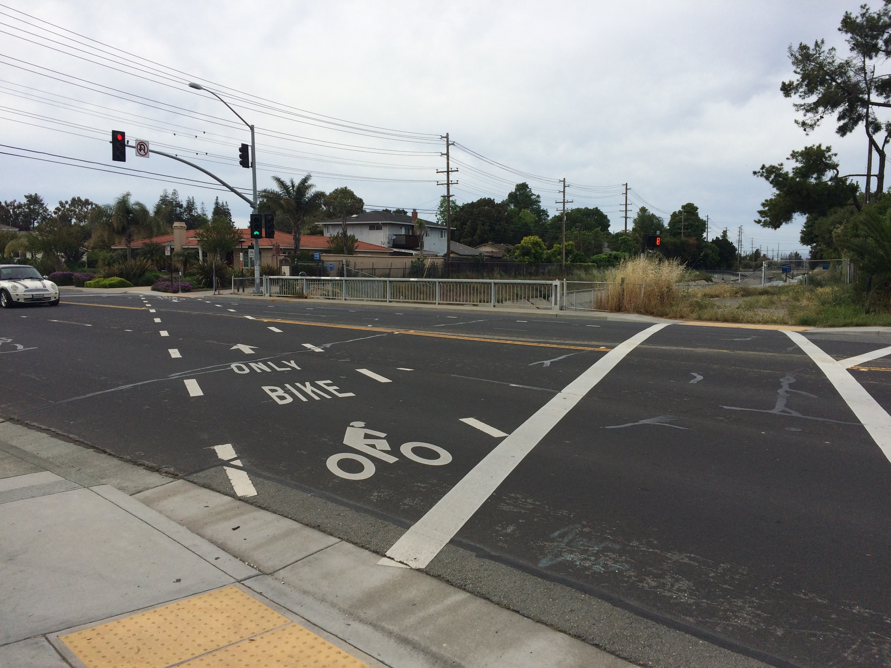

Building navigation for docs
5 design principles
Created by Tom Johnson / @tomjohnson
idratherbewriting.com
Write the Docs Portland 2017
May 15, 2017
Observations in Usability Labs

Universal Principles of Design

1. Entry Point
Design the entry point to your system to orient users and allow them to easily get started.
Think of homepage as a train depot

Example: Azure Docs homepage

Formalize the "desire lines"

From Flickr by George Redgrave
Example: Twitter

2. Hierarchy

Create a hierarchical outline of the content to help users both understand and visualize the body of information.
Example: Google

Example: Sentry

A hierarchy is a list of parts

Hierarchies provide an overview of the "whole"

Hierarchy provides meaning
Navigation provides a narrative for people to follow on the web.
— James Kalbach, Designing Web Navigation: Optimizing the User Experience
Hierarchies show what's in the neighborhood

Avoid deep hierarchies

Avoid non-standard design
3. Wayfinding

Provide navigational signposts — such as links, breadcrumbs, and workflow maps — to help orient users as to where they are in a larger system.
Users primarily navigate with inline links

Bottom-up navigation
- If you tell me I can do something, link to how to do that something
- if you tell me I can use something, link to a description of that something
- if you mention a concept or an idea, link to a description of that concept or idea
Example: Wikipedia
Example breadcrumbs from Facebook

3. Modularity

Break up content into independent topics that can be viewed, understood, and updated independent of the whole.
Users read non-sequentially
You can just read the sections about the tasks you want to do.— John Carroll, The Nurnberg Funnel
Modularity sounds great. Where do things go wrong?
Writers assume building blocks are the presentation

"Frankenbooks"
No matter where you land in it, you are in the middle of a maze .... .— Mark Baker, Every Page Is Page One
"Every Page Is Page One"

Create self-contained topics

Provide context before

Provide context after

4. Progressive Disclosure

Layer the information so that you don't present everything at once but rather make some content available only at secondary or tertiary levels.
Basics first, then expert features
Progressive disclosure is the best tool so far: show people the basics first, and once they understand that, allow them to get to the expert features. But don't show everything all at once or you will only confuse people and they will waste endless time messing with features that they don't need yet.— Jakob Nielsen, Interaction Design
Example of progressive information disclosure

An example of progressive disclosure in the UI

Quick reference guides
Instead of eliminating potentially useful info, provide quick reference guides that help users get oriented quickly with minimal cognitive load and low cost.
What are quick reference guides
- Differs from getting started, but both are welcome
- Main tasks described in compressed, poetry-like form
- Like cliff notes or cheat sheet
- Shows shape of help content
- Especially helpful for lists of functions, classes, methods
Quick reference guides example

Strategy: Create "getting started" guides

Complex process layouts


Quick reference guide layouts

Summary of doc navigation principles
- Entry Point
- Hierarchy
- Modularity
- Progressive Disclosure
- Wayfinding
Questions?
Thanks!

Tom Johnson
— idratherbewriting.com
— @tomjohnson
— tom@idratherbewriting.com